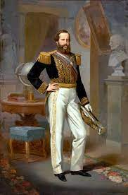

Dados Pessoais
| Nome |
Dom Pedro II |
| Endereço |
Rua da Imperatriz, 220 Centro, Petrópolis - RJ |
| Telefone |
(11) 2361-3214 |
| e-mail |
contato@monarquia.org.br |
| Data de Nascimento |
2 de dezembro de 1825 |
| Profissão |
Imperador do Brasil |
Dados Profissionais
| Príncipe Regente |
1831 - 1841 |
| Imperador |
1841 - 1889 |
Formação
| Letrado em |
Filosofia, Artes, História, Geografia, Ciências Naturais, Letras |
| Línguas Estrangeiras |
Tupi-guarani, Grego, Latim, Árabe, Sânscrito, Espanhol, Italiano, Alemão, Inglês |
| Habilidades |
Equitação, Esgrima |
